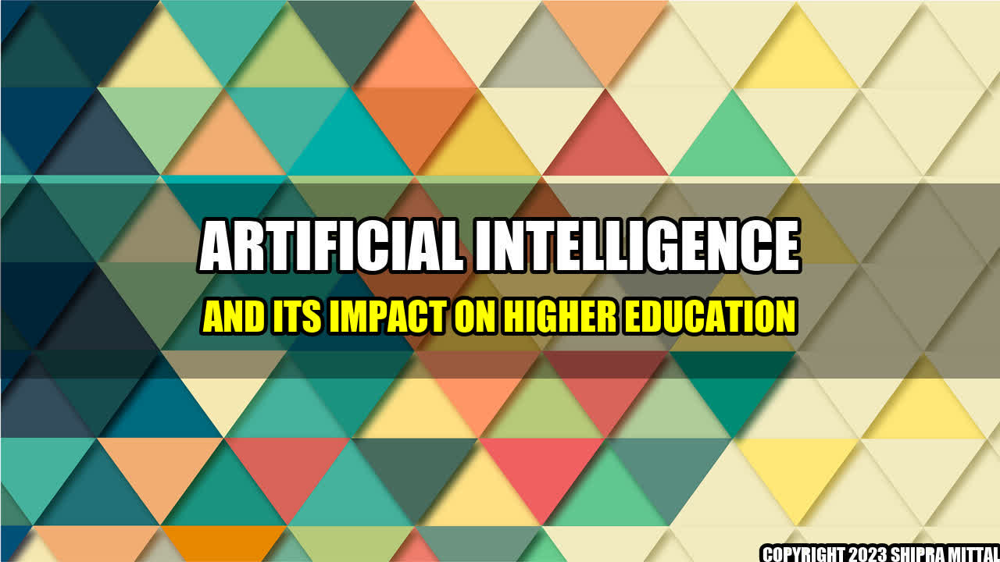

Artificial Intelligence and Its Impact on Higher Education

Imagine being a professor, having to grade hundreds of papers and assignments every week. It is a long and arduous task that requires a significant amount of time and effort. But what if there was a solution that made the grading process almost effortless? This is where Artificial Intelligence (AI) comes into play.
AI has already begun transforming higher education and the way we learn. Here are some real-life examples of how AI has impacted the education sector:
Coursera: Coursera is an online learning platform that uses AI to personalize the learning experience for students. It tracks their progress and adapts the course content to their individual needs.
Knewton: Knewton is an adaptive learning platform that uses machine learning to analyze student performance data and deliver personalized content.
Pearson: Pearson has developed an AI-powered virtual tutor that supports students in their learning journey.
These are just a few examples of how AI is disrupting higher education. By automating tasks such as grading and providing personalized learning experiences, AI is transforming the way we learn and teach.
Summary
AI is transforming higher education by automating tasks such as grading and providing personalized learning experiences.
Platforms like Coursera, Knewton, and Pearson are using AI to improve the learning experience for students.
The impact of AI on higher education is still in its early stages, but it is clear that it has the potential to change the way we learn and teach.
Akash Mittal Tech Article
Share on Twitter Share on LinkedIn